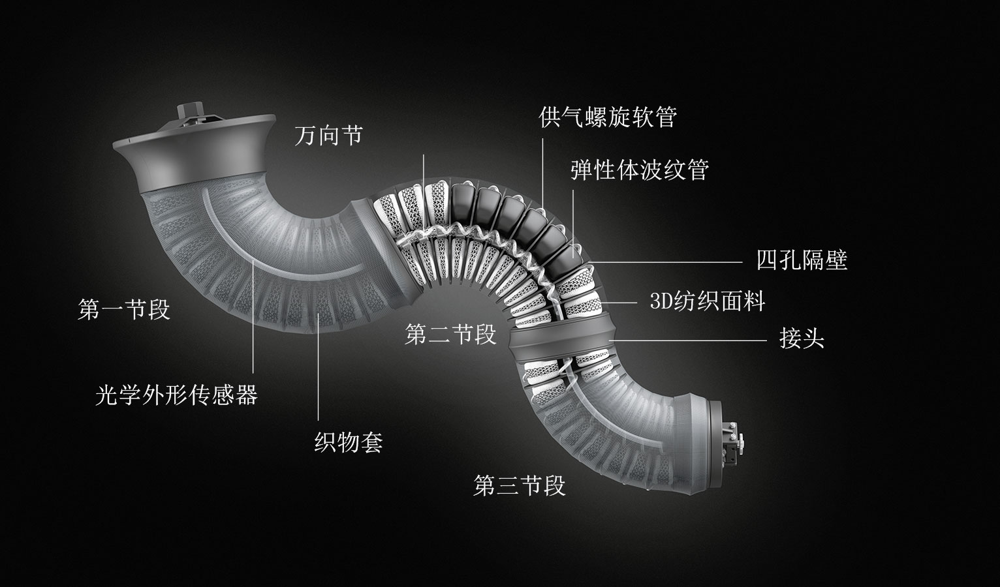

BionicMotionRobot
Interaktives Bildungskonzept für die Ingenieure von morgen
Junge Menschen für Technik zu begeistern, ist eines der großen Ziele unseres Bionic Learning Network. Das Projekt Bionics4Education bringt nun die Welt der Bionik mit dem Bildungssektor zusammen. Mit dem interaktiven Bildungskonzept wird die Themenvielfalt der Bionik jetzt auch im Klassenzimmer erlebbar: Es besteht aus einer digitalen Lernumgebung und einem praktischen Lernbaukasten, mit dem die Schüler auf kreative Art und Weise bionische Prototypen bauen können.
Bionics Kit: Bionik-Baukasten zum praxisorientierten Lernen
Der erste Lernbaukasten, der 2018 unter dem Namen Bionics Kit in Deutschland und den USA auf den Markt kommt, richtet sich an Schüler im Alter zwischen 14 und 18 Jahren. Durch den Bionics Kit erhalten Jugendliche die Chance, sich Aufgabenstellungen mithilfe bionischer Methoden unkompliziert und kreativ zu nähern – etwa beim praktischen Bau eines bionischen Fischmodells, eines Chamäleongreifers oder eines Elefantenrüssels mit adaptivem Greifer mit Fin Ray Effect®.
Als Grundausstattung enthält der Koffer alle notwendigen Komponenten, um mit dem Aufbau beginnen zu können. Dazu gehören handelsübliche kleine Servomotoren, Elektronikbauteile oder Kunststoffelemente wie Fin Ray®-Strukturen. Aufgabe der Schüler ist es, diese nun mit selbst ausgewählten Materialien ideenreich und sinnvoll zu kombinieren. Hierfür eignen sich Kabelbinder, Sandsäckchen, Pappe, Moosgummi und vieles mehr, sodass jeder Jugendliche seine individuelle und wiederverwendbare Modellvariante gestalten kann.

Der Bionics Kit enthält das Material zum Bau von drei verschiedenen Bionik-Projekten: bionischer Chamäleongreifer, bionischer Fisch und bionischer Elefantenrüssel mit adaptivem Greifer mit Fin Ray Effect®.
Digitale Lernumgebung mit begleitenden Informationen
Ergänzend zur Hardware gibt es unter www.bionics4education.com eine kostenlose Lernumgebung. Sie unterstützt das Lernen der Jugendlichen mit weiteren Inhalten rund um die Bionik sowie hilfreichen Tipps zur praktischen Umsetzung im Unterricht oder für zuhause. Auch Lehrvideos, Software-Codes oder CAD-Daten für den Ausdruck von Bauteilen auf dem eigenen 3D-Drucker werden frei bereitgestellt. Die Webseite ist auf Deutsch und Englisch verfügbar.
Open Source: Wissenswertes für Schüler und Lehrer
Die kostenfrei zur Verfügung gestellten Inhalte sollen einerseits den Lernenden beim Zusammenbauen und Programmieren helfen. Durch den ganzheitlichen Bildungsansatz lernen die Kinder und Jugendlichen auf spielerische Art und Weise die von der Natur inspirierten Tierroboter selbst zu bauen und anschließend über Schnittstellen wie PC, Tablet oder Smartphone fernzusteuern.
Andererseits liefert die Lernumgebung den Lehrenden biologisches methodisches Hintergrundmaterial. So können Pädagogen mithilfe der Webseite eine projektbasierte Lernerfahrung für ihre Schüler schaffen, in der Kreativität, Innovation und Problemlösung im Vordergrund stehen. Sämtliche Lehrmittel wurden vor diesem Hintergrund mit der Unterstützung unserer Bildungsexperten von Festo Didactic für den Einsatz innerhalb der Pädagogik und Lehre konzipiert.